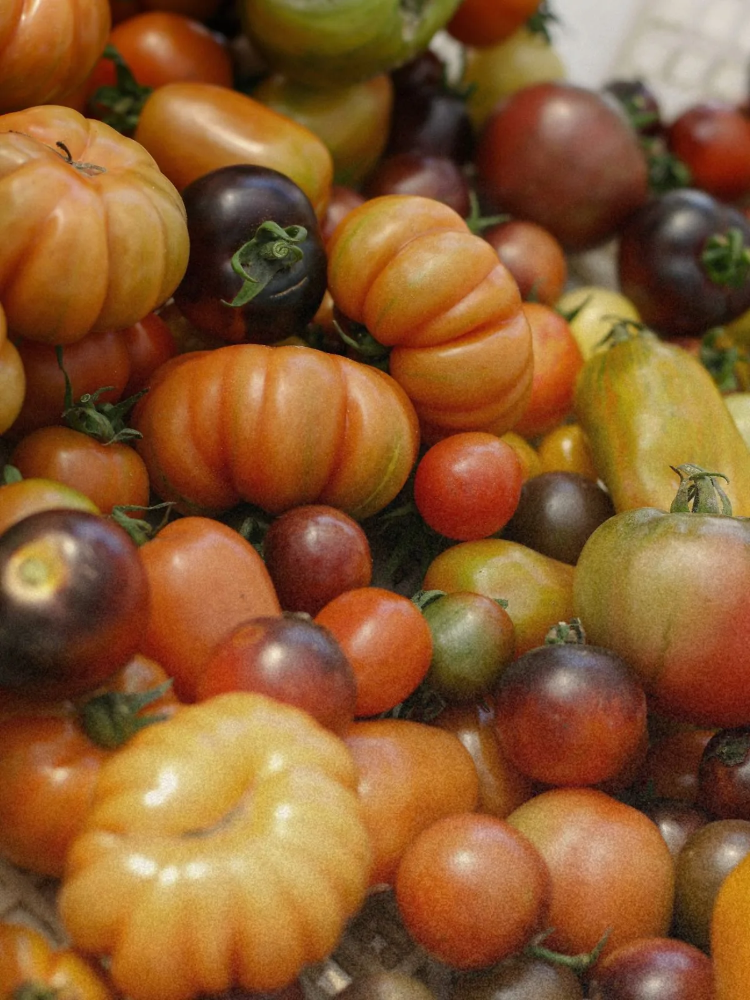
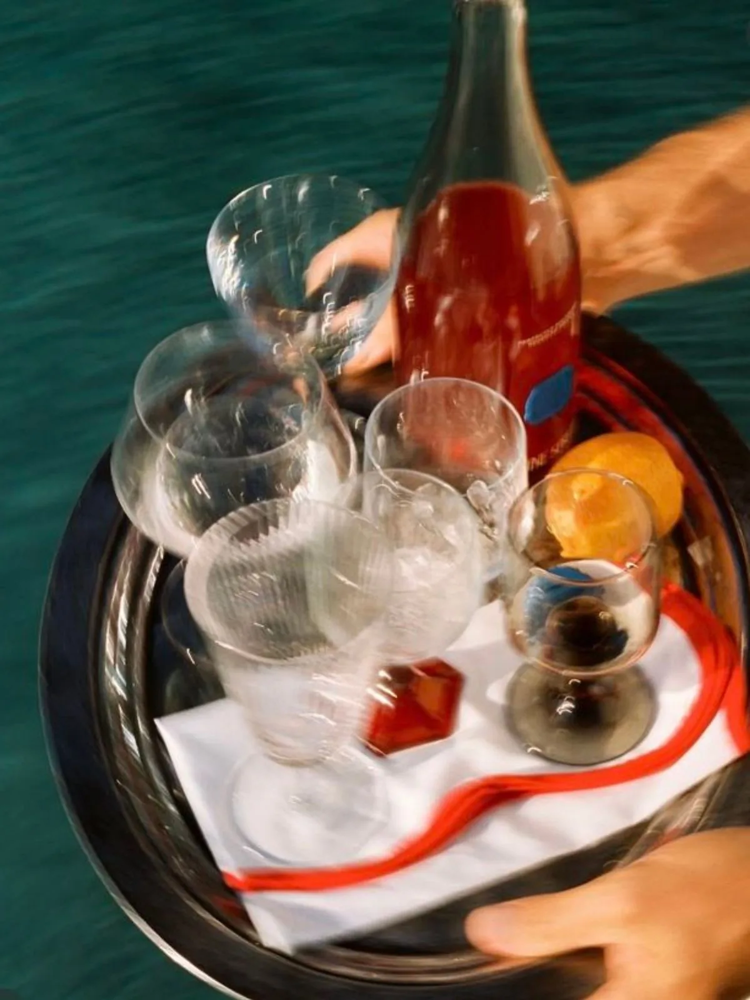
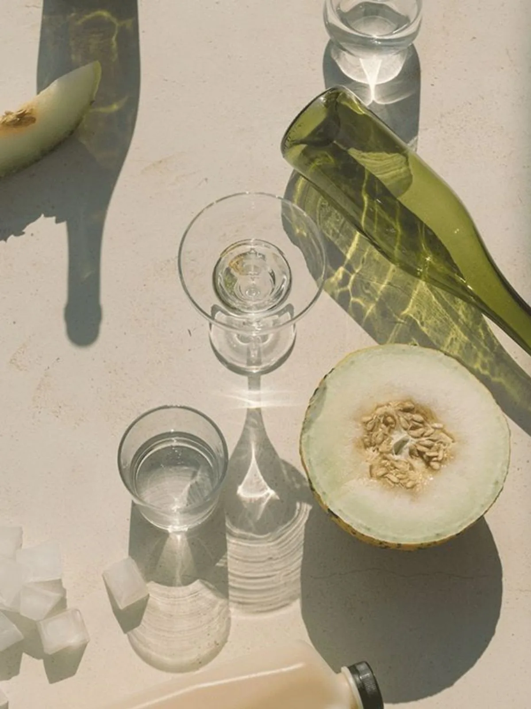
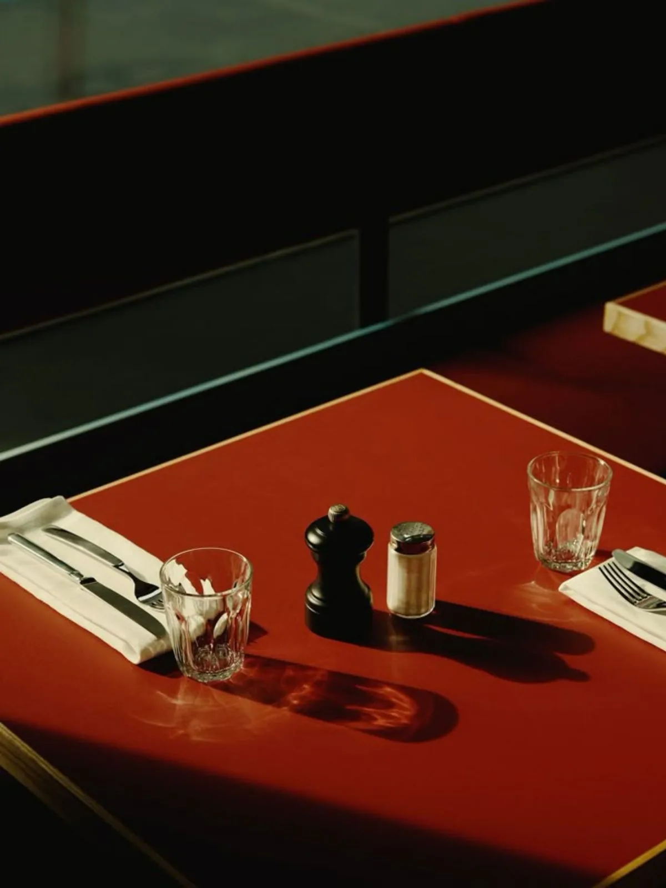
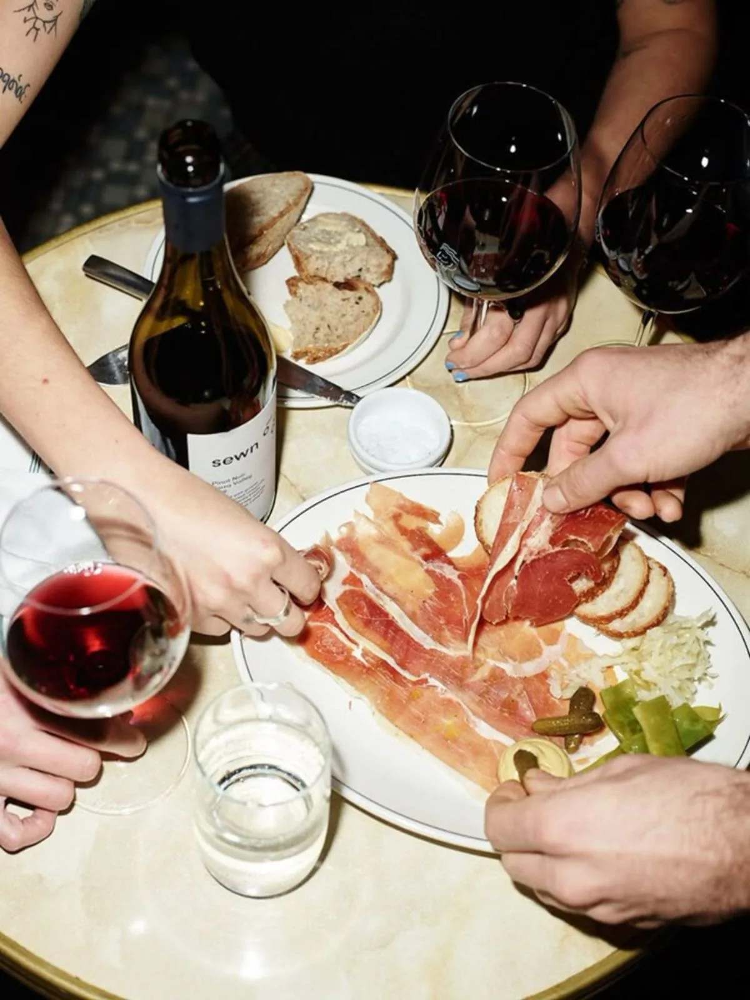

Calle Sol was built by two brothers. Our love of food was born in the kitchen of our childhood, at the family table where everyone gathered around the aromas and the stories. We wanted to bring a slice of Latin culture to Helsinki: friends, family and good company over great food and drink, with a slightly finer touch. Colourful, sunny and people-first. Calle Sol on rakennettu kahden veljeksen voimin. Rakkaus ruokaan syntyi jo lapsuuden keittiössä, perheen pöydässä, jossa kaikki kerääntyivät yhteen tuoksujen ja tarinoiden äärelle. Halusimme tuoda palan latinalaista kulttuuria Helsinkiin: kavereita, perhettä ja seuraa hyvän ruoan ja juoman äärellä, hieman fiinimmällä tyylillä. Värikkäästi, aurinkoisesti ja ihmisläheisesti.
Local producers, the season, no compromises. A good evening starts with a good ingredient, and that we won't cut. Lähituottajat, sesonki ja ei kompromisseja. Hyvä ilta alkaa hyvästä raaka-aineesta, siitä emme tingi.
from field to table pellolta pöytäänTwo brothers, one kitchen and the whole village around the same table. To us, every guest is part of the family. Kaksi veljestä, yksi keittiö ja koko kylä saman pöydän ääressä. Meille jokainen vieras on osa perhettä.
mi casa es tu casaSmall plates in the middle of the table, glasses full and evenings that stretch on. The best moments are the ones we share. Pieniä lautasia keskelle pöytää, lasit täyteen ja illat venymään. Parhaat hetket syntyvät, kun ne jaetaan.
moments are made for sharing hetket on tehty jaettaviksi




For us the ingredient is where it all starts. We pick the best of the season, favour local producers and let the flavours speak for themselves. A ripe tomato, fresh olive oil, fish from the day's catch, simple, but made with love. It's our way of honouring both the food and the people who make it. Meille raaka-aine on kaiken lähtökohta. Valitsemme sesongin parhaat, suosimme lähituottajia ja annamme makujen puhua puolestaan. Tomaatti kypsänä, oliiviöljy tuoreena, kala päivän saaliista, yksinkertaista, mutta tehtynä rakkaudella. Se on tapamme kunnioittaa sekä ruokaa että sen tekijöitä.
Reservations by email at hola@callesol.demo or by phone on +358 40 123 4567. You can also fill in the booking form on our contact page, and we'll confirm your table and hold it for the whole evening. Varaukset sähköpostitse hola@callesol.demo tai puhelimitse +358 40 123 4567. Voit myös täyttää varauslomakkeen yhteystiedot-sivulla, niin vahvistamme pöydän ja pidämme sen sinulle koko illaksi.
Go to the booking pageSiirry varaussivulle